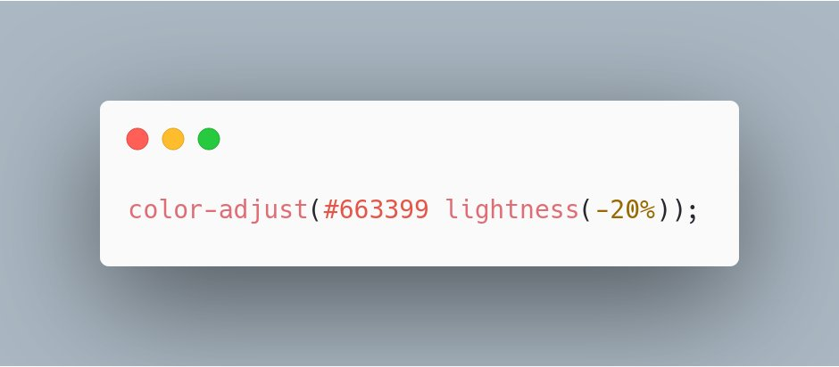

🗓️ March@w3c: f2f meetings, CSUN and IoT conferences, etc. ... https://www.w3.org/participate/eventscal.html

2-5 Mar.: The @tag holds its #f2fmeeting in #Wellington 🇳🇿 (yes, New Zealand!)
https://twitter.com/w3cdevs/status/12344790906038763525 Mar: @dontcallmeDOM gives a talk on Immersive Web at the @XR4All event "Engineering #XR for the Future" in #Munich, 🇩🇪 #ETSIARXR
https://www.etsi.org/events/1697-engineering-xr-for-the-future-frameworks-requirements-and-future-research
https://twitter.com/w3cdevs/status/12344791002466017294 Mar.: Hear, hear! Register to the "Meet the TAG" @tag meetup hosted by @InternetNZ, in "Welly #Wellington" 🇳🇿
https://twitter.com/InternetNZ/status/1233211481623289857
https://twitter.com/w3cdevs/status/12344790982332252199-10 Mar.: Hosted by @pearson, the @w3c #accessibility Education and Outreach #WorkingGroup (EOWG) meets in #Anaheim 🇺🇸. See their agenda: https://www.w3.org/WAI/EO/wiki/EOWG_F2F_March_2020#Ideas_for_topics
Due to travel restrictions related to COVID-19, this meeting has been canceled.
https://twitter.com/w3cdevs/status/12344791052000747579-10 Mar.: Sponsored by @amazon and @pearson, the Accessibility Guidelines Silver #TaskForce and #CommunityGroup participants meet in #Anaheim 🇺🇸
https://www.w3.org/WAI/GL/task-forces/silver/wiki/2020_March_F2F_Meeting_at_CSUN#Agenda_Topics
https://twitter.com/w3cdevs/status/123447910245697945611-13 Mar.: The @wai team is present at the 35th @CSUNCOD in #Anaheim 🇺🇸 https://www.csun.edu/cod/conference/sessions/ #accessibility #a11y #CSUNATC20

https://twitter.com/w3cdevs/status/123447910994383257613 Mar.: @JalanbirdW3C participates in a World Café session at the #IoT World #SanDiego 🇺🇸 to demonstrate how standards help get along in the new playground of #BigData @IoTClan
https://www.industryofthingsworldusa.com/peoples/alan-bird/
https://twitter.com/w3cdevs/status/123447911355924889617-18 Mar.: @JalanbirdW3C and @draggett are both panelists @iottechexpo in #London 🇬🇧 #IoT #Automotive https://www.iottechexpo.com/global/
https://twitter.com/w3cdevs/status/123447911733000192123-26 Mar.: Hosted by @GEOTAB, the @w3c Automotive #WorkingGroup meets in #Toronto 🇨🇦, #Automotive #ConnectedCar https://www.w3.org/auto/wg/wiki/Auto-f2f-mar-2020#Schedule
https://twitter.com/w3cdevs/status/123447911996403302430 Mar.-2 Apr.: @Airbnb hosts the @w3payments #WorkingGroup meetings in Dublin, 🇮🇪 #payments
https://github.com/w3c/webpayments/wiki/FTF-Mar2020
https://twitter.com/w3cdevs/status/123447912466581913725-26 Mar.: The @w3c Distributed Tracing #WorkingGroup holds its #f2fmeeting in #Linz 🇦🇹, hosted by @Dynatrace
https://docs.google.com/document/d/1fjIyoTCEtmwFbFZr2fBPCMDHWMYa4IctFCCYMfShrsE/edit
https://twitter.com/w3cdevs/status/1234479123038339075Today, the first two #CSS modules in level 5 were published as First Public #WorkingDraft: "CSS Color Module Level 5" and "Media Queries Level 5"
https://twitter.com/w3c/status/1234800012971868160
CSS Color Module Level 5 adds color modification functions, e.g. color-adjust allows to tweak a color lightness: https://www.w3.org/TR/2020/WD-css-color-5-20200303/#coloradjust
https://twitter.com/w3cdevs/status/1234883935169019907.@somelaniesaid spoke about how to apply different color scheme based on CSS media queries in her talk at our #w3cdevs2019 meetup last September
https://twitter.com/w3cdevs/status/1204731843985235973
https://twitter.com/w3cdevs/status/1234883943045963776Media Queries Level 5 adds new media features to customize style sheets based on ambient light, environment blending, #JavaScript support and user preferences (e.g. color contrast); it also enables script-based custom media queries: https://www.w3.org/TR/2020/WD-mediaqueries-5-20200303/#environment-blending
https://twitter.com/w3cdevs/status/1234883940978176001It's an opp. to clarify the land of #CSS levels... Of all CSS levels, CSS Level 2 (or CSS2) is the last monolithic level of CSS published as a @w3c #WebStandard, May 1998 - note the vintage look!: https://www.w3.org/TR/1998/REC-CSS2-19980512/
https://twitter.com/w3cdevs/status/1234883947705839622These first CSS Level 5 modules come at a time of very active discussions on the value of numbered "versions" of #CSS - e.g. @ppk recently wrote "CSS4 is here!" https://www.quirksmode.org/blog/archives/2020/01/css4_is_here.html
https://twitter.com/w3cdevs/status/1234883944958525441All current #CSS specs have their own specific levels ranging from 1 to 5, but CSS as a whole does not have a version. Two reasons: 1) some features are easier to complete than others, 2) CSS became so big that it is too much work for the editors to maintain as a monolithic spec.
https://twitter.com/w3cdevs/status/1234883952588075008This specification was eventually renamed CSS 2.1 (a revision was published in June 2011 - Editors were Bert Bos, @viumlie, @Hixie and @t)
https://www.w3.org/TR/CSS2/
https://twitter.com/w3cdevs/status/1234883950558007297It is important to note that the @csswg decided not to try to describe #CSS for users and #developers. The group works primarily for implementors and hopes others like MDN would create resources for devs. For ex., check the CSS reference on @MDN: https://developer.mozilla.org/en-US/docs/Web/CSS/Reference
https://twitter.com/w3cdevs/status/1234883960985001990The @csswg occasionally publishes a list of stable modules to tell #implementors the current state of CSS, that is the "CSS Snapshot": https://www.w3.org/TR/CSS/
https://twitter.com/w3cdevs/status/1234883958829125638That's why, starting from 1999, #CSS was decomposed into modules, each having its own life at its own pace. Each module defines a part of CSS to allow more immediate, incremental improvement of the specification: https://www.w3.org/Style/2011/CSS-process
https://twitter.com/w3cdevs/status/1234883956836794370So, back to CSS4's marketing question: https://github.com/w3c/csswg-drafts/issues/4770
Last month, @chriscoyier wrote a CSS-Tricks an article simply titled "CSS4" where he reminds what was and is on people's minds: https://css-tricks.com/css4/
https://twitter.com/w3cdevs/status/1234883963128287232As always, all the #CSS documents from the @csswg are developed on their github repo: https://github.com/w3c/csswg-drafts
https://twitter.com/w3cdevs/status/1234883968157310984A @w3c CSS4 #CommunityGroup was recently launched to give more space for the discussion of what would a CSS4 label encompass - join if you want to help! https://twitter.com/w3c/status/1231957312757288961
https://twitter.com/w3cdevs/status/1234883965674237953Due to travel restrictions related to COVID-19, this meeting has been canceled. https://twitter.com/w3cdevs/status/1234479105200074757
https://twitter.com/w3cdevs/status/1235893930333474816The @wai team is not longer participating in this event. https://twitter.com/w3cdevs/status/1234479109943832576
https://twitter.com/w3cdevs/status/1235894619734528002This meeting has been switched to a remote one. https://twitter.com/w3cdevs/status/1234479119964033024
https://twitter.com/w3cdevs/status/1235896377311363073Meeting postponed. https://twitter.com/w3cdevs/status/1234479123038339075
https://twitter.com/w3cdevs/status/1235896807034703872The @w3payments group resolved to transform this face-to-face agenda into a remote-first meeting. https://twitter.com/w3cdevs/status/1234479124665819137
https://twitter.com/w3cdevs/status/1235897118751145985.@w3c Data Catalog Vocabulary (DCAT) - Version 2 #WebStandard has been translated into Japanese: http://www.asahi-net.or.jp/~ax2s-kmtn/internet/rdf/REC-vocab-dcat-2-20200204.html Thank you @omnidirect ! #html5j #dotHTML5 #w3c_keio #translation https://twitter.com/w3c/status/1236847208491868161
https://twitter.com/w3cdevs/status/1236969760656707586The explainer “Improving Spoken Presentation on the Web†explores what mechanisms can be provided to give pronunciation guidance in #HTML content - this is helpful for #accessibility and for voice assistants reading content off the Web
https://twitter.com/w3c/status/1237266284460609536
.@w3c has an existing #WebStandard to describe speech presentation: #SSML, an XML-based format broadly adopted by speech-based systems, including voice assistants: https://www.w3.org/TR/speech-synthesis/

https://twitter.com/w3cdevs/status/1237366465961119744Two approaches are being explored: 1) either in-lining #SSML markup the same way as #SVG or #MathML can be, or 2) bringing the SSML model via attributes in HTML
https://www.w3.org/TR/2020/WD-pronunciation-explainer-20200310/
https://twitter.com/w3cdevs/status/1237366473020125184This work comes from the Pronunciation #TaskForce of the @w3c Accessible Platform Architectures (APA) #WorkingGroup #a11y
https://twitter.com/w3cdevs/status/1070710412050612225
https://twitter.com/w3cdevs/status/1237366474890772480The @w3c OWL 2 Document Overview (2nd ed.) #WebStandard has been translated into Japanese: http://www.asahi-net.or.jp/~ax2s-kmtn/internet/owl2/REC-owl2-overview-20121211.html Thank you @omnidirect ! #html5j #dotHTML5 #w3c_keio #translation
.@w3c OWL 2ウェブ・オントãƒã‚¸ãƒ¼è¨€èª #WebStandard ã¯æ—¥æœ¬èªã«ç¿»è¨³ã•ã‚Œã¦ã„ã¾ã™ï¼šhttp://www.asahi-net.or.jp/~ax2s-kmtn/internet/owl2/REC-owl2-overview-20121211.html ã©ã†ã‚‚ã‚ã‚ŠãŒã¨ã† @omnidirect ! #html5j #dotHTML5 #w3c_keio
https://twitter.com/w3cdevs/status/1237378514736812033*::pandemic {
position: fixed !important;
}
https://twitter.com/w3cdevs/status/1239654968992370693See also our previous discussion on making XR accessible on the Web https://twitter.com/w3cdevs/status/1229747427672018944 #w3cInclusiveXR - if remote collaboration is to move to #XR, it needs to be fully accessible https://twitter.com/w3c_wai/status/1239963260301922304
https://twitter.com/w3cdevs/status/1239964120725598208Great blog post from Bert Bos, co-inventor of #CSS! Read also our short history of CSS levels: https://twitter.com/w3cdevs/status/1234883935169019907 https://twitter.com/w3c/status/1239519804308033536
https://twitter.com/w3cdevs/status/1242095849519419392A number of us are enjoying the ease of accessing books in electronic formats when libraries and bookshops aren't available - the main standard for this is #ePub maintained by @w3c as part of its @w3cpublishing activity #COVIDー19 #ebooks
https://www.w3.org/publishing/
The @w3cpublishing group ran a #survey last month among to evaluate what the #ePub community needed in terms of technology #standards
https://lists.w3.org/Archives/Public/public-publ-wg/2020Feb/0005.html
https://twitter.com/w3cdevs/status/1242449403077672961If you have insights on the future of #ePub, you can still answer the @w3cpublishing survey and/or comment on the charter https://github.com/w3c/epub-3-wg-charter
https://twitter.com/w3cdevs/status/1242449411596333056This is leading to a proposed new EPUB 3 #WorkingGroup dedicated to significantly increase the #interoperability of #ePub
https://twitter.com/w3c/status/1240327947510321154
https://twitter.com/w3cdevs/status/1242449409943756805.@TzviyaSiegman reported on the first lessons from that survey, with a key request to maintain #ePub 3
https://www.w3.org/blog/2020/03/listen-to-the-people-the-future-of-epub-and-new-directions-for-publishing-w3c/
https://twitter.com/w3cdevs/status/1242449407938834433The @w3c "PROV-O: The PROV Ontology" #WebStandard has been translated into Japanese: http://www.asahi-net.or.jp/~ax2s-kmtn/internet/owl2/REC-prov-o-20130430.html Thank you @omnidirect ! #html5j #dotHTML5 #w3c_keio #translation https://twitter.com/omnidirect/status/1242449542097690625
https://twitter.com/w3cdevs/status/1242688791346925568W3llCome! https://twitter.com/nicj/status/1243208210955321347
https://twitter.com/w3cdevs/status/1243669745498456065.@wai recently published their Real-Time Communication Accessible User Requirements (RAUR) document as first draft to chart the path to make these
experiences accessible to all #a11y
https://twitter.com/w3c_wai/status/1240672981225033728
Many people around the world have shifted recently to online events and distributed meetings using audio/video teleconferences due to #COVIDー19. Making these experiences accessible to all gets even more critical!
#accessibility
https://twitter.com/LeonieWatson/status/1235231606237016066
https://twitter.com/w3cdevs/status/1244598236834344960This complements the work on XAUR which looked at the needs around Augmented and Virtual Reality #AR #VR
https://twitter.com/w3cdevs/status/1239964120725598208
https://twitter.com/w3cdevs/status/1244598240462417922Some of these requirements apply to other @w3c technologies (e.g. #WebRTC), other apply to applications making use of these technologies
https://www.w3.org/blog/2020/03/rtc-accessibility-user-requirements-call-for-review/
https://twitter.com/w3cdevs/status/1244598238637953028